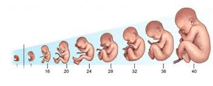
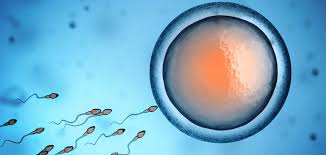
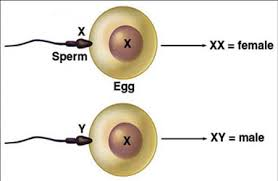

Prilikom polnog odnosa spermatozoidi dospijevaju u rodnicu, ulaze u matericu i zatim u jajovod. U jajovod dospijevaju i jajna ćelija nakon ovulacije. Ukoliko se spermatozoid i jajna ćelija istovremeno nađu u jajovodu, doći će do njihovog spajanja. Od velikog broja spermatozoida koji dospiju do jajovoda samo jedan će proći kroz omotač jajne ćelije. Slijedi spajanje jedra spermatozoida i jedra jajne ćelije. Taj proces se naziva oplođenje ili začeće, a oplođena jajna ćelija naziva se zigot.
Razvoj ploda po nedeljama
Oplođena jajna ćelija (zigot) dijeli se mitozom; prvo na dvije zetim na 4, 8, 16, 32... ćelije. Na ovaj način, za 4-5 dana, od zigota nastane zametak ili embrion. Pokretima zidova jajovoda zametak se kreće prema materici, gdje se ugradi u njen zid. Spoljašnji sloj zametka stvara omotač sa resicama, koje se uvlače u sluzokožu materice i priljubljuju se uz krvne sudove njenog zida. Tako nastaje placenta ili posteljica. Istovremeno nastaje i pupčana vrpca, koja povezuje embrion sa posteljicom. Pupčana vrpca je cjevasti organ kroz koji prolaze krvni sudovi. Preko pupčane vrpce i posteljice ostvaruje se veza između krvotoka majke i krvotoka embriona. Iz krvotoka majke embrion dobija kiseonik i hranljive materije; isto tako štetne materije iz krvotoka embriona prelaze u krvotok majke.
Krajem osme nedelje na embrionu se uočavaju glava, trup i udovi. Od tog perioda ljudski organizam se naziva plod ili fetus. Plod je obavijen i zaštićen ovojnicom-amnionom (vodenjak) i slobodno pliva u amnionskoj duplji, koja je ispunjena tečnošću.
Oplodnja jajne ćelije
Trudnoća traje oko 280 dana i završava se porođajem, koji započinje jakim kontrakcijama materice. Kontrakcije dovode do pucanja vodenjaka i istiskivanja ploda iz materice kroz rodnicu. Odmah po rođenju presijeca se pupčana vrpca, čime se prekida veza ploda sa majkom. Novorođenče tada prvi put samo udiše vazduh, a malo kasnije prihvata majčinu dojku i počinje da sisa; to su prve refleksne radnje.
Ubrzo nakon porođaja posteljica se odvaja od zida materice i jakom kontrakcijom izbacuje se iz tijela. Tada je porođaj završen.
Trenutak oplođenja odrediće i pol budućeg novorođenčeta. Jajna ćelija sadrži 23 hromozoma, od kojih je jedan polni X hromozom. Spermatozoid sadrži 23 hromozoma, od kojih polni može biti X ili Y hromozom. Ako se prilikom oplođenja jajna ćelija spoji sa spermatozoidom koji nosi polni X hromozom, razviće se embrion ženskog pola. Ako dođe do spajanja jajne ćelije i spermatozoida sa Y hromozomom, nastaje embrion muškog pola.
Pol djeteta zavisi od toga koji je polni hromozom prisutan u spermatozoidu
Zigot je diploidan: 23 hromozoma je dobio od oca, a 23 od majke. Hromozomi sadrže gene, koji predstavljaju nasljednu osnovu svih osobina budućeg ljudskog bića. Nasljedna osnova određuje pol, boju kose i očiju, tjelesnu građu i mnoge druge karakteristike čovjeka.
Nekad se u materici istovremeno razvijaju dva ploda ili više plodova. Ako se nakon prvih dioba zigota novonastale ćelije počnu samostalno razvijati, razviće se jednojajčani blizanci. Oni imaju iste gene; zato su istog pola i veoma slični.
Ako se desi da u jednom ciklusu sazriju dvije jajne ćelije i da obje budu oplođene, razviće se embrioni koji nemaju iste gene. U tom slučaju razvijaju se dvojajčani blizanci, koji mogu biti različitih polova i prilično različiti.
Svako dijete se rađa sa karakteristikama svojstvenim svom polu. Te karakteristike nazivamo primarne polne karakteristike i to su: prisustvo polnih organa i sposobnost da se u njima proizvode polne ćelije. Sekundarne polne karakteristike javljaju se u pubertetu, pod uticajem polnih hormona. Kod djevojčica, sekundarne karakteristike su: rast dojki, nagomilavanje masnog tkiva, zbog čega tijelo postaje zaobljenije, širenje karlice, uspostavljanje menstrualnog ciklusa... Kod dječaka u pubertetu javlja se maljavost po licu (rastu brada i brkovi), glas postaje dublji, postaje izraženija štitasta hrskavica grkljana (Adamova jabučica). Muški polni hormoni odgovorni su i za snažnije razvijenu muskulaturu, krupnije kosti, agresivnije ponašanje...